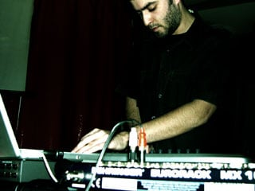

updates
december
- NNY will be performing at the Madeira DIG festival along with Emi Maeda + Lia, Phonophani + Marius Watz and Frank Bretschneider.
november
- "Periféricos", a documentary about digital arts by Hugo Olim, has been premiered the 15th of November for the Funchal International Film Festival at Cinemax, Funchal. The film features an alternate version of the track "Artria" by NNY on the opening credits.
OCTOBER
- Friends Reinterpretations Of Unreleased 332 Variations Volume 4 by ps remixed by NNY featuring artwork by Infetu.
Released by MiMi Records.
september
- I made a playlist for Micro-ondas show #14 which will air on October 1st on Antena 3. You can listen to the show here or subscribe to the podcast here.
- Nothing releases "Stay", a short video/demo featuring new music from NNY.
- To celebrate 3 years of NNY, I thought it would be a good idea to give the website a new look. So here it is, I hope you enjoy it. Special thanks to Vic for the flash 3d engine.
- New podcast available featuring an exclusive unreleased remix I did for ps.
august
- You can now subscribe to NNY.RSS to get the latest updates and monthly podcasts of new songs and live performances.
july
- A new track called "Bright Side" was played on Hugo Olim's first radio show on Antena 3 called Micro-ondas. You can check the playlist of the show here.
june
- COIL released today. You can download the EP here.
may
- NNY will release a new EP entitled COIL.
- The 30 minutes piece represents a series of thoughts, images, and sensations occurring in a person's mind. It's a series of events that are regularly repeated in the same order expressing the situation of something that is or appears to be enclosed or surrounded by something else. Never ending or changing the action or process of moving or being moved.
- Released on June 6th by MiMi Records.

- In other news, Pedro Leitão from Monocromatica and Test Tube Records recently gave an interview on Radio Zero and played the track "Artria" from NNY's last album ECT.
april
- NNY products available @ cafepress.com/nnyproducts
march
- NNY contributes a new track called "Crystal Space" to the "Saudade: Various Artists From The Atlantic Coast" compilation released by MiMi Records.
- Article (pt) about NNY @ Marginal
- NNY has been featured as the Artist Of The Week on Mike Lothar's website, designer of many themes for the phphBB forums. The track featured is a new song called "Bright Side" and you can listen to it on the flash player.
february
- "Artria" from the album ECT will be featured on a documentary about digital arts called "Periféricos" directed, filmed and produced by visual artist Hugo Olim.
january
- NNY interview (pt) @ atrompa.blogspot.com (17.01.06)
UPDATES 2005
|
latest release
FORTHCOMING RELEASE
- Track contribution to Mothers Against Noise II compilation.
Track contribution to Thisco compilation.
in progress
- Drones And Pulses EP.
- A less experimental and more musical album I've been working on for the last couple of years.
|